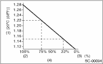

STARTING/CHARGING SYSTEMS(H4SO) > Battery
WARNING:
• Electrolyte is corrosive acid and has toxicity; be careful of handling the fluid.
• Do not let electrolyte contact with skin, eyes or clothing. Especially at contact with eyes, flush with water for 15 minutes and get prompt medical attention.
• Do not let electrolyte contact with painted surfaces.
• Batteries produce explosive gases; be careful of handling.
• Keep open flames away from batteries.
• In case an explosion does occur, wear safety glasses when working near any battery. Never lean over a battery.
• Ventilate when using or charging batteries in enclosed space.
• Before starting work, remove rings, watches and other metallic belongings.
• When in contact with a metallic portion of the vehicle, never allow metallic tools held in the other hand to come into contact with the battery positive terminal or any hardware attached to the terminal.
Check the battery case, top cover, vent plugs, and terminal posts for dirt or cracks. If necessary, clean with water and wipe with a dry cloth.
Apply a thin coat of grease on the terminal posts to prevent corrosion.
Check the electrolyte level in each cell. If the level is below MIN level, bring the level to MAX level by pouring distilled water into the battery cell. Do not fill beyond MAX LEVEL.
3. SPECIFIC GRAVITY OF ELECTROLYTE
1. Measure specific gravity of electrolyte using a hydrometer and a thermometer.
Specific gravity varies with temperature of electrolyte so that it must be corrected at 20°C (68°F) using the following equation:
S20 = St + 0.0007 × (t − 20)
S20:
Specific gravity corrected at electrolytic solution temperature of 20°C (68°F)
St: Measured specific gravity
t: Measured temperature (°C)
Determine whether or not battery must be charged, according to corrected specific gravity.
Standard specific gravity: 1.220 — 1.290 [20°C (68°F)]

|
(1) |
Specific gravity |
|
(2) |
Complete charge |
|
(3) |
State of charge |
|
(4) |
Specific gravity and state of charge |
2. Measuring the specific gravity of the electrolytic solution in the battery will disclose the state of charge of the battery. The relation between specific gravity and state of charge is as shown in the figure.